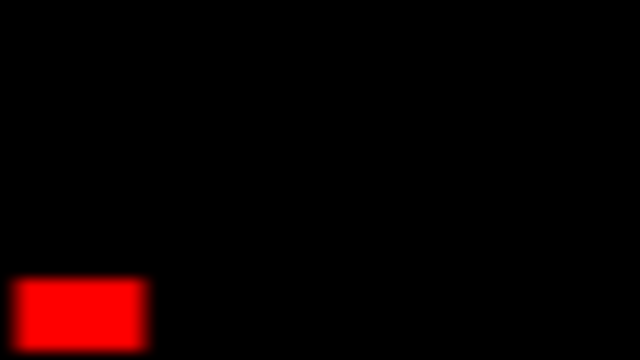

Fi el Ɛada, ay code normal yetlansa Ɛal CPU (el dmegh principal mteƐ el PC).
El Shader houwa code yekhdem Ɛal GPU.
Binnesba lel specialité mteƐ l'GPU heya ano y'executi barcha des instructions fard dharba(Parallel-Computing).
Par contre el CPU y'executi des instructions complexes akthar w asƐab, ama limité fel nombre Ɛla khater
fih aq̈al cores.
Generalement, el shaders mostaƐmlin win nest'ħaq̈ou n'processiw barcha des données(data) fard waq̈t.
Mathalan:
- Computer Graphics
(Games, Movies, etc.)
- Machine Learning
- Image Processing
Fama barcha anweƐ mteƐ shaders, ħasb el istaƐmel.
- Pixel (wala Fragment)
Shader: execution Ɛla kol pixela Ɛal écran.
- Vertex Shader:
execution Ɛla kol point fi objet 3D.
- Compute Shader:
yeħseb barcha data ħasb el besoin.
Fama barcha methods.
Ach'har languages mteƐ shaders houma: GLSL w HLSL w mayebƐedch Ɛal C.
Innejmou nestaƐmlou site kima ShaderToy bech
n'testiw el pixel/fragment shaders (eli y't'executew Ɛla kol pixela).
Example:
fragColor = vec4 (0.5, 0.1, 0.8, 0.0);Enzel Ɛal taswira bech t'ħel ShaderToy w jarrab el code, baddél el couleur:
Kima tchouf, fel cas hedha, Ɛand'na code simple yħawel el pixelét mauve.
El execution bech tsir Ɛla kol pixela/fragment.
Deja kima tleħdhou, el color variable essemha fragColor(vec4: fiha 4 valeurat):
- R: Red (fel example hedha = 0.5 Ɛla 1.0)
- G: Green (fel example hedha = 0.1 Ɛla 1.0)
- B: Blue (fel example hedha = 0.8 Ɛla 1.0)
- A: Alpha (généralement lel transparency/opacity, ama moch mostaƐmla houni)
Ken nħottou el valeurat el kol 1.0; yjina loun abyadh.
Bech ennajmou nsawrou achkél(shapes), lezem nakhtarou el position.
Ɛanna el possibilité bech naƐrfou el position mteƐ kol pixela, b'esteƐmèl l'UVs,
eli houma el coordonnées mteƐ el pixela fel écran.
Bech naƐrfou data Ɛal écran, yelzem nƐaddiw el data hedhi m'el CPU l'el GPU.
El data hedhi essemha "uniform".
Aya data tetƐadda m'el CPU(RAM) l'el GPU(Video RAM) essemha "uniform".
vec2 normalizedCoord = fragCoord / iResolution .xy ;
fragColor = vec4 (normalizedCoord , 0.0, 1.0);Enzel w jarrab, ken t'ħeb
Fel cas hedha, naq̈smou el coordonnées mteƐ el pixels Ɛla l'resolution bech nchoufou valeur binét 0 w 1 (estaƐmelna iResolution, eli mawjouda par defaut fi ShaderToy).
Yomken leħedht elli el'type mteƐ el'fragCoord houwa vec2 (fih 2 valeurs khater el écran
mteƐna 2D, donc pixelét Ɛla X w pixelét Ɛla Y).
Ki nwarriw el resultat, tchoufou les couleurs hedhouma.
Yq̈oul el q̈ayel, kifeh jew hal couleurèt?
El resultat hedha Ɛibara Ɛla 2 degradé(gradient) b couleurèt différents.
Houni, el couleurèt houma red w green, w yetq̈ablou fel coin ywalliw yellow.
// Red
float uvX = fragCoord .x / iResolution .x;
fragColor = vec4 (uvX , 0.0, 0.0, 0.0);Enzel w jarrab, ken t'ħeb
// Green
float uvY = fragCoord .y / iResolution .y;
fragColor = vec4 (0.0, uvY , 0.0, 0.0);Enzel w jarrab, ken t'ħeb
Puisque Ɛandna el position mteƐ kol pixela, ennajmou nsawrou el fourma eli nħebbou Ɛliha.
Par example, bech nsawrou circle, nestħaq̈ou nq̈arnou el distance ma bin el circle w position el pixela.
Example:
vec2 normalizedCoord = fragCoord / iResolution .xy ;
float circleMask = distance (normalizedCoord , vec2 (0.5, 0.5));
fragColor = vec4 (circleMask , 0.0, 0.0, 0.0);Enzel w jarrab, ken t'ħeb
Voilà, nekhdhou el normalizedCoord w n'thabtou el distance mƐa l'centre
Hakka ywalli Ɛandna gradient yebda m'el centre, samminéh circleMask, w ħattineh f'el fragColor (Red).
Taw nestaƐmlou step function bech ngeddou limite lel circle mteƐna. El gradient mayseƐednech houni, ma'najmouch nchoufou el chfar(edge) mteƐ el circle:
vec2 normalizedCoord = fragCoord / iResolution .xy ;
float circleMask = distance (normalizedCoord , vec2 (0.5, 0.5));
// Limite l'el circle (step function)
circleMask = step (0.5, circleMask );Enzel w jarrab baddel el step function arguments, ken t'ħeb tbaddel kobr el circle.
Kima rina l'example, uniforms houma variables/data nebƐthouhom m'el CPU l'el GPU, w bech nkoun précis, m'el RAM l'el VRAM(Video RAM).
L'implementation mtaƐ l'uniforms tetbaddel ħasb l'engine, shader language, tools, etc...
F'el cas mteƐna, nestaƐmlou ShaderToy bech netƐalmou el shaders. Ki tenzel Ɛla new f'el site,
telq̈a "Shader Inputs":
uniform vec3 iResolution; // viewport resolution (in pixels)
uniform float iTime; // shader playback time (in seconds)
uniform float iTimeDelta; // render time (in seconds)
uniform float iFrameRate; // shader frame rate
uniform int iFrame; // shader playback frame
uniform float iChannelTime[4]; // channel playback time (in seconds)
uniform vec3 iChannelResolution[4]; // channel resolution (in pixels)
uniform vec4 iMouse; // mouse pixel coords. xy: current (if MLB down), zw: click
uniform samplerXX iChannel0..3; // input channel. XX = 2D/Cube
uniform vec4 iDate; // (year, month, day, time in seconds)
uniform float iSampleRate; // sound sample rate (i.e., 44100)
Hedhouma el variables el kol ennajmou nestaƐmlouhom f'el code mteƐna bech nbadlou el behavior mteƐ el shader.
Fha'l example, q̈eƐid nħarrak f'el sphere b'el souris (nestaƐmel fi iMouse uniform). Enzel Ɛal taswira ken t'ħeb tjarrab el code.
Mafaméch ken iMouse, w iResolution. Famma zeda iTime bech nbadlou el shader bel waq̈t.
Taw jarrabna sawwarna sphere khaterha sehla: neħsbou el distance bin el position mteƐ el pixela w'el centre mteƐ el circle.
Bech ennajmou nsawrou fourmét okhrin, yelzemna netƐalmou techniquèt jdod.
Example, bech nsawrou rectangle, yelzem nsawrou 4 stoura. Donc, naƐmlou limite ħasb el UV(normalized coordinates).
Madém el value bin 0.0 w 1.0, nħottou el limite 0.2 par example Ɛal X w'el Y:
// NestaƐmlou "step(x,y)" bech naƐmlou limite m'el x = vec2(0.2, 0.2)
vec2 borders = step (vec2 (0.2), uv);
// Nedherbouhom fi bƐadh'hom bech ywalliw black
float boxMask = borders.x * borders.y;Enzel w jarrab:
Kima tchouf houni, staƐmelna UV, eli heya el normalized coordinates.
Note: Barcha functionèt f'el GLSL Ɛand'hom barcha versionèt, kima:
float step (float edge, float x);
vec2 step (vec2 edge, vec2 x);
vec3 step (vec3 edge, vec3 x);
vec4 step (vec4 edge, vec4 x);Hedha applicable l'aghlabiyét el functionèt el mawjoudin par default f'el GLSL w el HLSL.
Taw ken nħebbou nkamlou el rectangle, yelzem naƐmlou nafs el ħaja ama m'el jiha l'okhra.
Ennajmou neq̈lbou el usage mteƐ " kima hak:
step (uv, vec2 (0.8));Fi Ɛoudh
step (vec2 (0.2), uv);W ki nedherbouhom fi bƐadh'hom yaƐtiwna el resultat hedha: (enzel w jarrab)
Ennajmou nestaƐmlou
F'el coin louwel, naƐmlou gradient m'el 0.0 l'el 0.2:
smoothstep (vec2 (0.0), vec2 (0.2), uv);F'el coin theni, naƐmlou gradient m'el 0.8 l'el 1.0:
smoothstep (vec2 (0.8), vec2 (1.0), uv);Nedherbouhom fi bƐadh'om w voilà! (tnajjem tenzel w tjarrab el code)
Ennajmou n'controlliw el UV bech naƐmlou cool effects. Example: bech nbadlou kobr el box mteƐna, juste nedherbou el uv fi value (4.0 f'hal example).
uv = uv * 4.0;
Ken nħebbou nƐawdouh barcha marràt, nejmou nestaƐmlou
uv = fract (uv * 32.0);
Fama mochkel sghir w howa eli mahomch squares(carrés), plutôt rectangle. Bech nsalħouha, yelzem nzidou
Donc el calcul mteƐ el UV ywalli hak:
vec2 uv = fragCoord / max (iResolution.x, iResolution.y);Taw nħebbou nzidou circle f'el west donc l'étape loula, nħadhrou el uv l'el circle (bech ma yetjabbédch ħasb el écran zeda).
// Puisque el ratio mech 1:1, lezem ntalƐouha
vec2 ratio = vec2 (1.0, iResolution.y / iResolution.x);
vec2 center = ratio / vec2 (2.0, 2.0);
vec2 uv_center = uv - center;
Hakka ywalli Ɛandna normalized coordinates w mafihomch ħatta stretch. En plus, ħadharna el center UV, bech el sphere mteƐna tetsawwar f'el west.
L'étape el thénya, nzidou el circle mask w nzidouha l'el final color.
// Nħadhrou el circle
float circleMask = length (uv_center);
// ...
// NestaƐmlou el uv_center l'el boxMask zeda
vec2 uv_box = fract (uv_center * 32.0);
// ...
// Nħottou el boxMask f'el RED channel w'el circleMask f'el GREEN channel
fragColor = vec4 (boxMask, circleMask, 0.0, 0.0);Enzel w jarrab el code!
ennajmou naƐmlou reptition l'el circles ken nestaƐmlou
float circleMask = fract (length (uv_center) * 4.0);
Taw ken nħebbou nħarkou el circles, juste nestaƐmlou "iTime" (que ce soit nzidouh wela ennaq̈souh, ça dépend m'el direction eli nħebbou Ɛliha).
float circleMask = fract (length (uv_center) * 4.0 - iTime);Ennajmou zeda n'limitiw kobr el gradient b'smoothstep bin 0.5 w 1.0.
float circleMask = smoothstep (0.5, 1.0, fract (length (uv_center) * 4.0 - iTime));
Bien sûr, les possibilités mayouféwech. Ennajmou nestaƐmlou el circle mask bech nbadlou el UV mtaƐ el box mask, w yodh'hor k'el distortion.
Bech nestaƐmlou
vec2 uv_box = fract (uv_center * mix (32.0, 38.0, circleMask));Finalement, ngeddou chwaya les couleurs, w nsubstractiw el boxMask m'el circleMask bech yodh'hor wra el circle.
fragColor = vec4 (boxMask, circleMask - boxMask, 0.0, 0.0);
Hedhiya el base mteƐ el pixel shaders.
Fama barcha methods w techniquèt okhrin netƐalmouhom mƐa bƐadhna f'el partiyét el jéyin.
Sinon, ken tħeb, aƐmel talla Ɛal site hedha: The Book of Shaders, fih barcha couràt.
Pagèt okhrin: SDF - Basics | Intro | Home